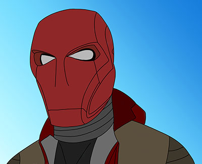

Unofficial logo recolor, please do not repost.
Howdy! welcome to my first post! its an exciting one to start with! This morning, I received an email that I had been extremely excited about! I learned that on 10/24/2021 (next sunday) I will receive a contract to march at Redline Percussion for the 2022 WGI Season! I'll be playing aux percussion (RACK CITY BABYYYYY) which means I will have a big rack with all sorts of drums, cymbals and more to add more texture to our show. at the world class level (Redline is a PIW group - PIW = Percussion Independent World class) the rack can be an extremely important part of the ensemble. Over the course of the upcoming season, (November - Mid-April) I will not only meet the newest members, but grow closer to those I met prior to the pandemic when i marched in 2020. I'm super excited to be able to march with my favorite group for a 2nd year, I can't wait to hear what our show will be!
Below are the groups i previously marched with!
| Date | Ensemble | Class | Show Title | Noteable achievements | instrument |
|---|---|---|---|---|---|
| 2016 | West Bloomfield High School | PSA | "HOLD ON" | 2nd Place @ state champs | Auxilliary Percussion |
| 2017 | West Bloomfield High School | PSA | "INTO THE CANVAS" | state champs + 13th place at world finals! | Bass Drum #3 |
| 2018 | West Bloomfield High School | PSA | "WITH YOU" | 2nd place @ state champs | Tom Drum |
| 2019 | West Bloomfield High School | PSA | "WOVEN" | 2nd place @ state champs + 13th place at world finals! | Bass Drum #2 |
| 2020 | Redline Percussion | PIW | "THE ONLY WAY OUT IS IN" | Unfortunately Cancelled due to COVID-19 before indianapolis regional | Auxilliary Percussion |
| 2022 | Redline Percussion | PIW | "???" | Season has not technically begun as of halloween 2021 | Auxilliary Percussion |
RED HOOD FROM DC COMICS

Please do not repost or use this image